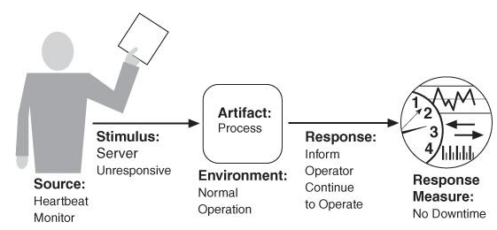
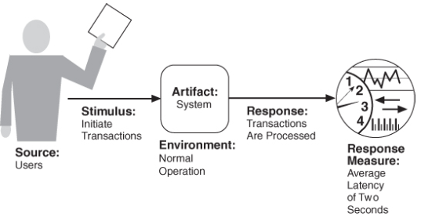
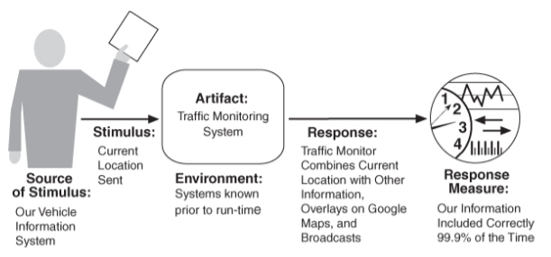
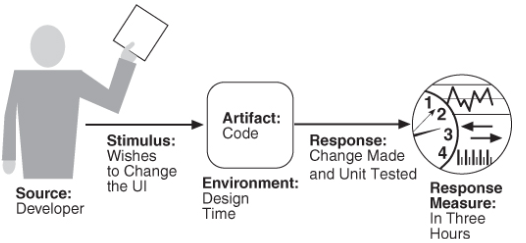
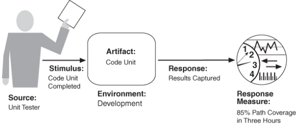
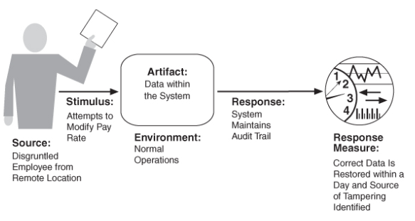
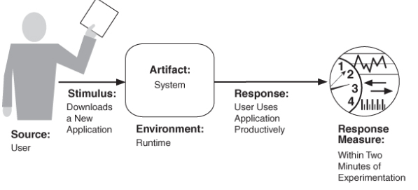

Tácticas De Arquitectura y Escenario
Escenario
Un escenario general de disponibilidad se puede describir con las siguientes partes:
- Fuente de estímulo:
Puede ser interno o externo (Personas, hardware, software, infraestructura) que se encarga de producir el estímulo.
- Estímulo:
Es el fallo que se produce puede ser de tipo (omisión, crash, tiempo incorrecto, respuesta incorrecta.
- Artefacto:
Es aquel que especifica el recurso que se requiere que esté altamente disponible (un procesador, canal de comunicación, proceso o almacenamiento).
- Ambiente:
Es el estado del sistema cuando ocurre la falla o la falla también puede afectar la respuesta deseada del sistema
- Respuesta:
Son las reacciones asociadas a la falla.
- Medición de la respuesta:
Es la duración de disponibilidad o un tiempo para detectar la falla.
Ejemplo
El monitor de latido determina que el servidor no responde durante las operaciones normales. El sistema informa al operador y continúa funcionando sin tiempo de inactividad.

Tácticas De Disponibilidad
Está diseñada para permitir que un sistema sufra fallas en el sistema, de modo que un servicio que está siendo entregado por el sistema siga ejecutándose
Se clasifican en:
- Detección de fallas:
son las encargadas de la detección de signos de vida de varios componentes. Las tácticas que se incluyen en esta categoría son Ping, monitor, heartbeat, marca de tiempo, comprobación de estado, monitoreo de la condición, votación, replicación, redundancia funcional, redundancia analítica, detección de excepciones, excepciones del sistema, cercado de parametros, escritura de parametros, tiempo de espera, auto prueba.
- Recuperación de fallas:
Son una combinación que se encarga de reintentar una operación o mantener datos o cálculos redundantes. Las tácticas que se incluyen en esta categoría son redundancia activa, redundancia pasiva, repuesto, manejo de excepciones, retroceso, actualización de software, reintentar, ignorar comportamiento defectuoso, degradación, reconfiguración, detección de excepciones, reintroducción (táctica de la sombra, resincronización de estados, reinicio de escalada, reenvió directo).
- Prevención de fallas:
Son las que dependen de la eliminación de elementos del servicio o de la utilización de mecanismos para limitar el alcance de las fallas. Las tácticas que se incluyen en esta categoría son retiro del servicio, transacciones, modelo predictivo, prevención de excepciones, aumentar conjunto de competencias.
Escenario
Un escenario general de rendimiento se puede describir con las siguientes partes:
- Fuente de estímulo:
Son de fuentes internas o externas, que se encargan de generar los eventos del sistema.
- Estímulo:
Son las llegadas del evento, el patrón de llegada puede ser periódico, estocástico o esporádico, caracterizado por parámetros numéricos.
- Artefacto:
Es el sistema o uno o más de sus componentes.
- Ambiente:
Son los varios modos operativos que puede estar el sistema (normal, emergencia, carga máxima o sobrecarga
- Respuesta:
Es procesar los eventos y cambiar el modo del sistema (normal, emergencia, carga máxima o sobrecarga).
- Medición de la respuesta:
: Es el tiempo que lleva procesar los eventos (latencia, fecha límite, rendimiento, tasa de errores).
Ejemplo
Los usuarios inician transacciones en operaciones
normales. El sistema procesa las transacciones con una latencia
promedio de dos segundos.

Tácticas De Rendimiento
Son las encargadas de controlar el tiempo dentro del cual se genera una respuesta.
Se clasifican en:
- Control de la demanda de recursos:
Es administrar cuidadosamente la demanda de recursos. Esto se puede hacer reduciendo el número de eventos procesados aplicando una tasa de muestreo o limitando la velocidad a la que el sistema responde a los eventos. Las tácticas que se incluyen en esta categoría son gestionar frecuencia de muestreo, limitar la respuesta al evento, priorizar eventos, reducir los gastos generales, tiempos de ejecución, aumentar la eficiencia.
- Administrar recursos:
Es cuando recurso puede ser cambiado por otro por ejemplo los datos intermedios se pueden mantener en un caché o se pueden regenerar dependiendo de la disponibilidad de recursos de tiempo y espacio. Las tácticas que se incluyen en esta categoría son aumentar los recursos, introducir la concurrencia, mantener múltiples copias de cómputos, mantener múltiples copias de datos, tamaños de cola enlazados, programas recursos,
Escenario
Un escenario general de interoperabilidad se puede describir con las siguientes partes:
- Fuente de estímulo:
Es la solicitud para interoperar con otro sistema.
- Estímulo:
Es una solicitud para intercambiar información entre sistemas.
- Artefacto:
Son los sistemas que deseen interoperar.
- Ambiente:
Es cuando los sistemas que desean interoperar se descubren en tiempo de ejecución o se conocen antes del tiempo de ejecución
- Respuesta:
Es el resultado de la solicitud de interoperar puede ser el intercambio de información o que la solicitud sea rechazada, las entidades apropiadas son notificadas.
- Medición de la respuesta:
Es el porcentaje de intercambios de información
procesados correctamente o el porcentaje de intercambios de información rechazados correctamente.
Ejemplo
El sistema de información del
vehículo envía nuestra ubicación actual al sistema de monitoreo de
tráfico. El sistema de monitoreo de tráfico combina nuestra ubicación
con otra información, superpone esta información en un mapa de
Google y la difunde. Nuestra información de ubicación está
correctamente incluida con una probabilidad del 99.9%.

Tácticas De Interoperabilidad
Se clasifican en:
- Localizar:
Se utiliza cuando los sistemas que interactúan deben descubrirse en tiempo de ejecución, solo hay una táctica en esta categoría Descubrir el servicio.
- Gestionar interfaces:
consta de 2 tácticas que son orquestar y adaptar la interfaz
.
Para lograr la interoperabilidad, los sistemas relevantes se ubican entre sí y luego administran las interfaces para que puedan intercambiar información.
Escenario
Un escenario general de modificabilidad se puede describir con las siguientes partes:
- Fuente de estímulo:
Es especificar quién realiza el cambio (el desarrollador, un administrador del sistema o un usuario final).
- Estímulo:
Es especificar el cambio a realizar.
- Artefacto:
Es especificar qué se va a cambiar (componentes o módulos específicos, la plataforma del sistema, su interfaz de usuario, su entorno u otro sistema con el que interactúa).
- Ambiente:
Es especificar cuándo se puede realizar el cambio (tiempo de diseño, tiempo de compilación, tiempo de compilación, tiempo de inicio o tiempo de ejecución).
- Respuesta:
Es Realizar el cambio, probarlo e implementarlo).
- Medición de la respuesta:
Es el tiempo y el dinero que toma hacer el cambio.
Ejemplo
El desarrollador desea cambiar la interfaz de usuario modificando el código en el momento del diseño. Las modificaciones se realizan sin efectos secundarios dentro de las tres horas.

Tácticas De Modificabilidad
Son las que tienen como objetivo controlar la complejidad de los cambios, así como el tiempo y el costo de los cambios.
Para entender bien las tácticas hay que saber dos conceptos claves que son:
Acoplamiento:
Se refiere a la complejidad de la relación que existen en las clases se clasifica en un sistema estrechamente acoplado y en una complejidad débil.
Cohesión:
Se refiere a un al nivel de coherencia que existe entre los distintos miembros de una clase, se clasifica en alta y baja.
Las tácticas e clasifican en:
Escenario
Un escenario general de testeabilidad se puede describir con las siguientes partes:
- Fuente de estímulo:
Es quien realiza la prueba al sistema puede ser una persona o un sistema.
- Estímulo:
Es la ejecución de un conjunto de pruebas al sistema.
- Artefacto:
Es la unidad de código que se está probando puede ser un módulo en la arquitectura, un subsistema o todo el sistema.
- Ambiente:
Son las etapas en la cual se realiza la prueba (etapa de desarrollo y mantenimiento).
- Respuesta:
El sistema se puede controlar para realizar las pruebas
deseadas y se pueden observar los resultados de la prueba.
- Medición de la respuesta:
Es la representación de la facilidad en la que se probó el sistema, puede ser el tiempo de la cantidad de esfuerzo para preparar el entorno de prueba, encontrar fallas.
Ejemplo
El
probador de la unidad completa una unidad de código durante el
desarrollo y realiza una secuencia de prueba cuyos resultados se
capturan y que proporciona una cobertura de ruta del 85 por ciento
dentro de las tres horas de la prueba.

Tácticas De Testeabilidad
El objetivo es permitir pruebas más fáciles cuando se completa un incremento del desarrollo de software.
Se clasifican en:
- Controlar y observar el estado del sistema:
son fundamentales para la capacidad de
Prueba y los dos van de la mano ya que no tiene sentido controlar algo
si no puedes observar lo que sucede cuando lo haces. En esta categoría se incluyen interfaces especializadas, método de establecer y obtener variables, un método de informe, método de restablecimiento, método de activar resultados detallados, grabación /reproducción,
localizar almacenamiento de estado,
fuentes de datos abstractos,
SandBoxing,
afirmaciones ejecutables.
- Complejidad límite:
Se encargan de mantener el sistema simple para que sean fáciles de probar. En esta categoría se incluyen Limitar la complejidad estructural, y el Limitar el no determinismo.
Escenario
Un escenario general de seguridad se puede describir con las siguientes partes:
- Fuente de estímulo:
Es quien realiza el ataque puede ser una persona o un sistema.
- Estímulo:
Es el ataque (intento no autorizado para mostrar datos, cambiarlos o eliminarlos, acceder a servicios del sistema, cambiar el comportamiento del sistema o reducir la disponibilidad).
- Artefacto:
Es el objetivo del ataque (los servicios del sistema, datos dentro del sistema, componente o recurso del sistema, datos producidos o consumidos por el sistema).
- Ambiente:
Son las condiciones en la cual se encuentra el sistema en el momento que se recibe el ataque (en línea, fuera de línea, desconectado de una red).
- Respuesta:
Es cuando el sistema debe garantizar que las transacciones tengan un seguimiento y se realicen de manera segura, que no suceda el acceso no autorizado, servicios o datos manipulados.
- Medición de la respuesta:
Es el tiempo en el que el sistema detecta el ataque, cuántos ataques se resistieron, cuánto tiempo tomó recuperarse de un ataque exitoso, y cuánta
información fue vulnerable a un ataque en particular.
Ejemplo
Un empleado descontento de una ubicación remota intenta
modificar la tabla de tasas de pago durante las operaciones
normales. El sistema mantiene una pista de auditoría y los datos
correctos se restauran en un día.

Tácticas De Seguridad
Se clasifican en:
- Detectar:
En esta categoría se incluyen detectar intrusión, detectar la denegación del servicio, verificar la integridad del mensaje,
detectar el retraso del mensaje.
- Resistir los ataques:
En esta categoría se incluyen detectar identificar actores, autentificar actores, autorizar autores,
limitar el acceso,
limitar la exposición,
cifrar datos,
entidades separadas,
cambiar la configuración predeterminada.
- Reaccionar a los ataques:
En esta categoría se incluyen revocar el acceso, bloquear la computadora,
informar a los actores.
- Recuperar de los ataques:
En esta categoría se incluyen mantener un registro de auditoría, restauración de los servicios,
tácticas de disponibilidad que se encargan de recuperarse
.
Escenario
Un escenario general de usabilidad se puede describir con las siguientes partes:
- Fuente de estímulo:
Es el usuario final puede ser un administrador o que tenga un rol especifico.
- Estímulo:
Es cuando el usuario final desea utilizar un sistema de manera eficiente, aprender a usarlo, minimizar el impacto de los errores, adaptar el sistema o configurar el sistema.
- Artefacto:
Es el sistema o la parte específica del sistema con el que el usuario está interactuando.
- Ambiente:
Son las etapas en la cual se realiza la prueba (etapa de desarrollo y mantenimiento).
- Respuesta:
El sistema debe proporcionar al usuario las funciones necesarias o anticiparse a las necesidades del usuario.
- Medición de la respuesta:
Es el tiempo de la tarea, la cantidad de errores, la cantidad de tareas realizadas, la satisfacción del usuario, el conocimiento del usuario, la relación entre las operaciones exitosas y las operaciones totales, o la cantidad de tiempo o datos perdidos cuando se produce un error
Ejemplo
El usuario
descarga una nueva aplicación y la está utilizando de manera
productiva después de dos minutos de experimentación.

Tácticas De Usabilidad
El objetivo es aumentar la facilidad de uso cuando un usuario quiere realizar una tarea.
Se clasifican en: